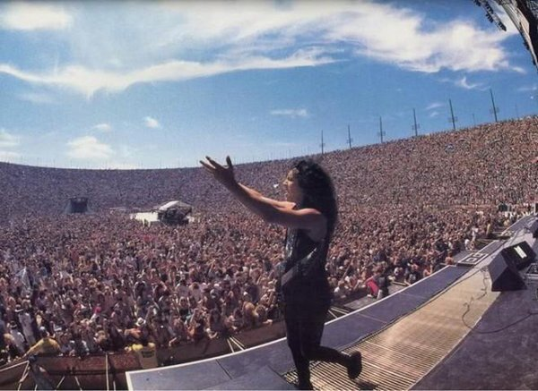

-
-

- Világkörüli turnék milliókat vonzottak. Olyan eseményeken léptek fel, mint a Live Earth és a Glastonbury.
- Ők voltak az első bandák egyike, akik 1991-ben a Szovjetunióban egy hatalmas, 1,6 millió fős tömeg előtt játszottak.
- 2013-ban történelmet írtak azzal, hogy az Antarktiszon is koncerteztek, így minden kontinensen játszottak egy éven belül.
Koncertek és turnék
-
Film és egyéb projektek
- Metallica: Some Kind of Monster (2004): Dokumentumfilm, amely a zenekar belső működését és nehézségeit mutatja be.
- Through the Never (2013): Egy egyedi koncertfilm, ami narratív történetet is tartalmaz.
-
Grammy-díjak
A Metallica az egyik legsikeresebb rockzenekar a Grammy-díjak tekintetében, összesen 9 díjat nyertek és további 23 jelölést kaptak.
- 1989 – One – Best Metal Performance (Az első Grammy-díjuk, a "Metal" kategória debütálásakor.)
- 1990 – Stone Cold Crazy – Best Metal Performance
- 1991 – Metallica (Black Album) – Best Metal Performance
- 1992 – Enter Sandman – Best Rock Song (jelölés)
- 1999 – Better than You – Best Metal Performance
- 2000 – Whiskey in the Jar – Best Hard Rock Performance
- 2004 – St. Anger – Best Metal Performance
-
2009 – Death Magnetic – Három Grammy:
- Best Metal Performance (My Apocalypse)
- Best Recording Package
- Best Rock Instrumental Performance (Suicide & Redemption)